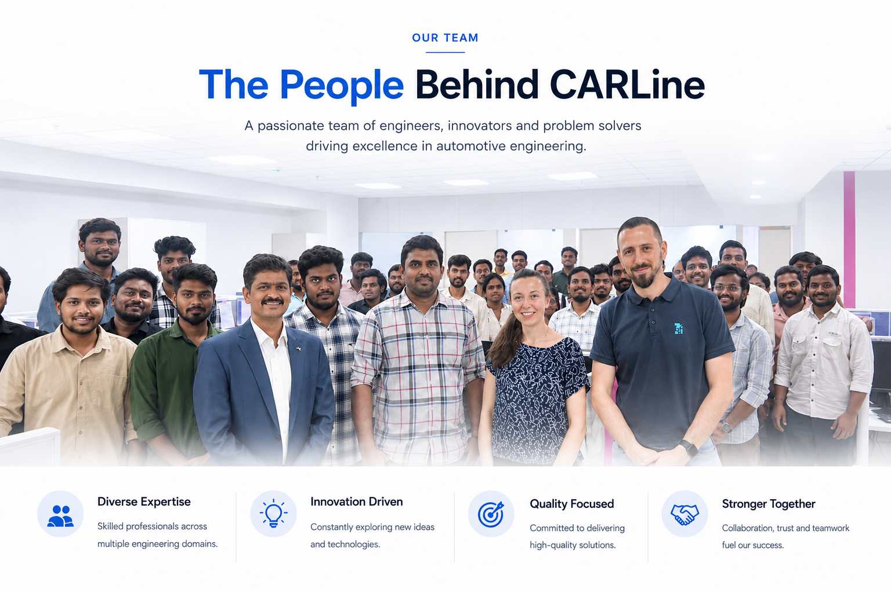

About Us
CATIA & NX Automotive Product Engineering
CARLine Technologies develops production-ready mechanical automotive engineering data for OEMs and Tier-1 suppliers.
Discover our story
Who We Are
Engineering Mechanical Components for Modern Cars.
CARLine Technologies specializes in mechanical automotive product engineering using CATIA. We develop production-ready 3D CAD models, BIW structures, sheet metal components, plastic parts, tooling concepts, fixtures, and engineering documentation for automotive OEMs and Tier-1 suppliers.
Our focused engineering team supports requirements analysis, concept design, detailed engineering, drawing release, and engineering change management.
- CATIA-based mechanical design expertise
- Automotive OEM and Tier-1 support
- Production-ready CAD models and documentation
Our Capabilities
Focused expertise across mechanical automotive engineering.
Product Engineering
CATIA-based 3D CAD modeling, detailed engineering, and drawing release for automotive components and assemblies.
BIW, Sheet Metal & Plastic Design
Mechanical design support for BIW structures, sheet metal parts, plastic trim, interior, and exterior components.
Tool & Fixture Design
Tooling concepts, fixture assemblies, process planning, and manufacturing feasibility support.
Engineering Documentation
Engineering drawings, GD&T, controlled CAD releases, and engineering change management.
Start a Conversation
Bring Your Mechanical Design Challenge to CARLine
Discuss your next CATIA-based automotive engineering requirement with our team.
Contact Our Experts